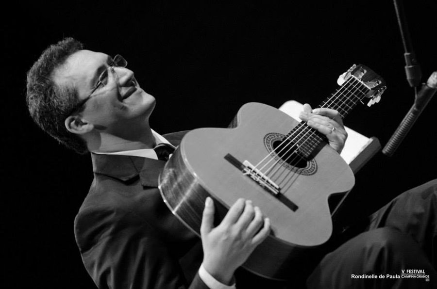
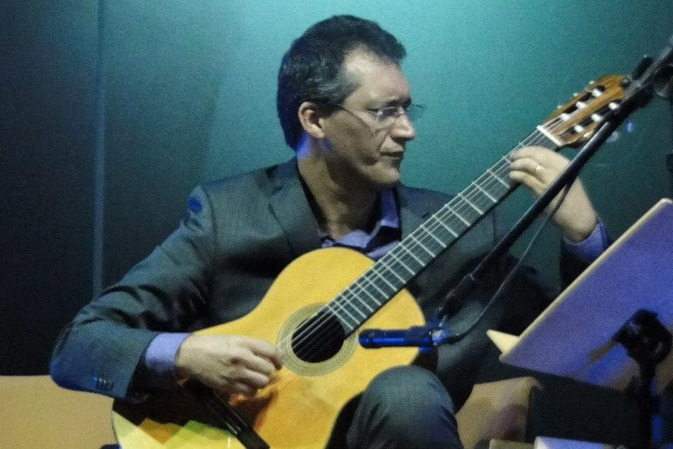

Violão · composição
Marcelo Fernandes
Violonista e compositor. Aperfeiçoou-se durante três anos no Uruguai com Abel Carlevaro, e desde o doutorado faz o que poucos intérpretes fazem: toca aquilo que pesquisa.
É doutor em Música pela Universidade de São Paulo (2011), mestre em Artes (2003) e bacharel em Música com habilitação em Violão (1999) pela mesma universidade, e professor do curso de Música da UFMS. Teve entre seus mestres Edelton Gloeden, Edna Baldassi e Abel Carlevaro.
No doutorado abordou o modernismo nas obras para violão de Camargo Guarnieri — e desde então articula performance e pesquisa, levando esse repertório aos palcos. Participou de cursos e festivais de violão no Brasil e no exterior.
Realizou inúmeros concertos no país, com destaque para o projeto Sonora Brasil, do SESC, dentro do qual empreendeu uma turnê de 86 recitais de violão em 20 estados brasileiros. Fora do Brasil, tocou em teatros, conservatórios, universidades e festivais na França, Espanha, Suíça, Alemanha, Bélgica, Portugal, Paraguai, Colômbia, Bolívia e Estados Unidos.
É o compositor do Duo. Escreveu canções sobre poemas de escritores sul-mato-grossenses — Delasnieve Daspet, Raquel Naveira, Rubênio Marcelo — e do poeta Carlos Nejar, da Academia Brasileira de Letras. Boa parte do repertório do Duo Amábile só existe porque ele escreveu.
É também autor do hino da UFMS e fundador da Camerata Madeiras Dedilhadas, grupo de cordas dedilhadas da universidade.
Frentes de trabalho
Tocar, compor e pesquisar o que toca.
-
Doutorado · USP
Camargo Guarnieri ao violão
O modernismo nas obras para violão do compositor, tema que virou repertório de concerto e não ficou só na tese.
-
Sonora Brasil · SESC
86 recitais, 20 estados
Uma turnê que levou o violão erudito brasileiro a plateias de todo o país.
-
Composição
Canções sobre poetas brasileiros
Obras escritas para o Duo sobre poemas de Delasnieve Daspet, Raquel Naveira, Rubênio Marcelo, Eliane Guaraldo e Carlos Nejar — algumas em nheengatu.
-
UFMS
Ensino e vida musical da universidade
Professor do curso de Música. Compôs o hino da UFMS e fundou a Camerata Madeiras Dedilhadas.

Laureado nos seguintes concursos
- X Concurso Nascente USP-Abril, 2000
- I Concurso MOAD, Campos do Jordão, 1999
- Violão Intercâmbio, São Paulo, 1999
- XVII Concurso Latino-Americano Rosa Mística, Paraná, 1998
- II Concurso Nacional de Violão Musicalis, São Paulo, 1998
Currículo
Marcelo Fernandes Pereira
Formação, mestres, concursos, concertos, composição e docência. A versão oficial e completa está na Plataforma Lattes do CNPq.
Formação
Toda a titulação na Universidade de São Paulo.
-
2011 · Doutorado
Doutor em Música
Tese sobre o modernismo nas obras para violão de Camargo Guarnieri.
-
2003 · Mestrado
Mestre em Artes
Universidade de São Paulo.
-
1999 · Graduação
Bacharel em Música, habilitação em Violão
Universidade de São Paulo.
Mestres
-
Uruguai
Abel Carlevaro
Três anos de aperfeiçoamento com o violonista uruguaio.
-
USP
Edelton Gloeden
-
USP
Edna Baldassi
Laureado nos seguintes concursos
-
2000
X Concurso Nascente USP-Abril
São Paulo.
-
1999
I Concurso MOAD
Campos do Jordão.
-
1999
Violão Intercâmbio
São Paulo.
-
1998
XVII Concurso Latino-Americano Rosa Mística
Paraná.
-
1998
II Concurso Nacional de Violão Musicalis
São Paulo.
Concertos e turnês
-
SESC
Sonora Brasil — 86 recitais de violão
Turnê por 20 estados brasileiros.
-
Europa
Teatros, conservatórios, universidades e festivais
França, Espanha, Suíça, Alemanha, Bélgica e Portugal — incluindo recital solo no Conservatório de Winterthur, em 2025.
-
Américas
Concertos fora do Brasil
Paraguai, Colômbia, Bolívia e Estados Unidos.
-
Brasil
Festivais e cursos de violão
Participação em diversos festivais nacionais e internacionais de performance ao violão.
Composição
Obras escritas sobre poemas de escritores brasileiros, boa parte estreada pelo Duo Amábile.
-
2016
“As árvores do meu lugar”
Sobre poema de Eliane Guaraldo. Gravada no CD “As canções que fizemos para ela — homenagem a Maria Betânia”.
-
2019
“Fogo da Poesia”
Estreada na Academia Brasileira de Letras de Mato Grosso do Sul.
-
2021
“Ode à Campo Grande”
Sobre poema de Rubênio Marcelo. Escolhida pelo programa “Meu Mato Grosso do Sul” para o aniversário da capital e transformada em clipe musical.
-
2023
Duas canções para “Cabeza de Vaca — O andarilho das Américas”
Composições inéditas sobre poemas de Raquel Naveira.
-
2023
Obra sobre poema de Carlos Nejar
Estreada na Academia Brasileira de Letras, no Rio de Janeiro.
-
2024
Fados do projeto ALMAR
Ao lado do poeta Rubênio Marcelo.
-
2025
Canções em nheengatu
Apresentadas na turnê europeia, junto a canções sobre Delasnieve Daspet, Raquel Naveira e Rubênio Marcelo.
-
UFMS
Hino da Universidade Federal de Mato Grosso do Sul
Composição do hino oficial da universidade.
Docência e vida universitária
-
UFMS
Professor do curso de Música
Faculdade de Artes, Letras e Comunicação da Universidade Federal de Mato Grosso do Sul. E-mail institucional: marcelo.pereira@ufms.br
-
UFMS
Camerata Madeiras Dedilhadas
Fundador do grupo de cordas dedilhadas da universidade.